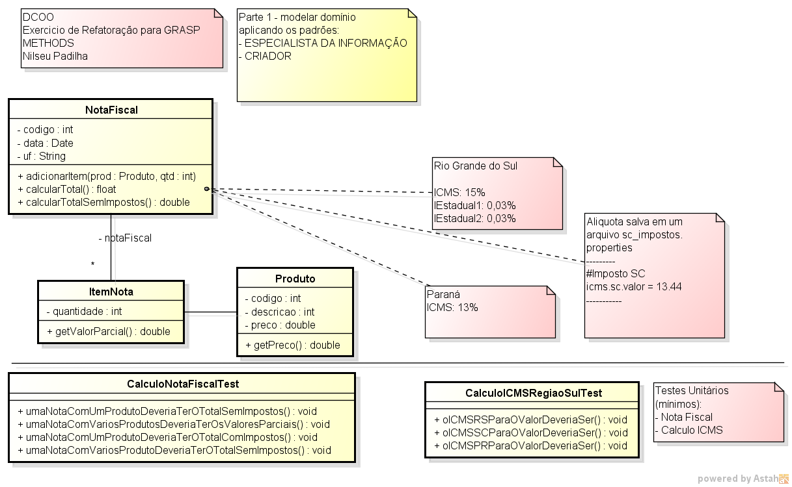
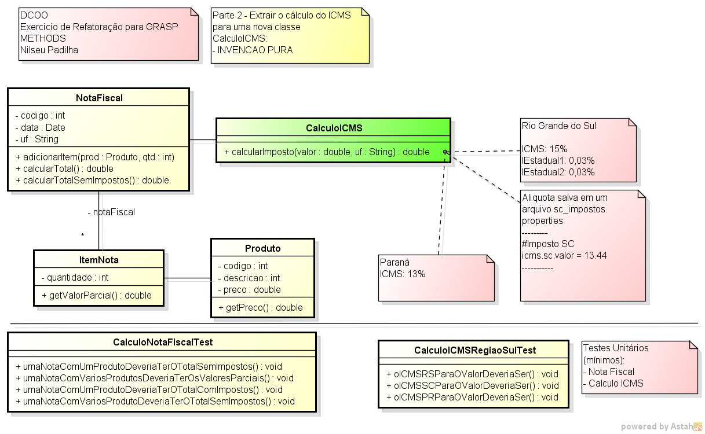
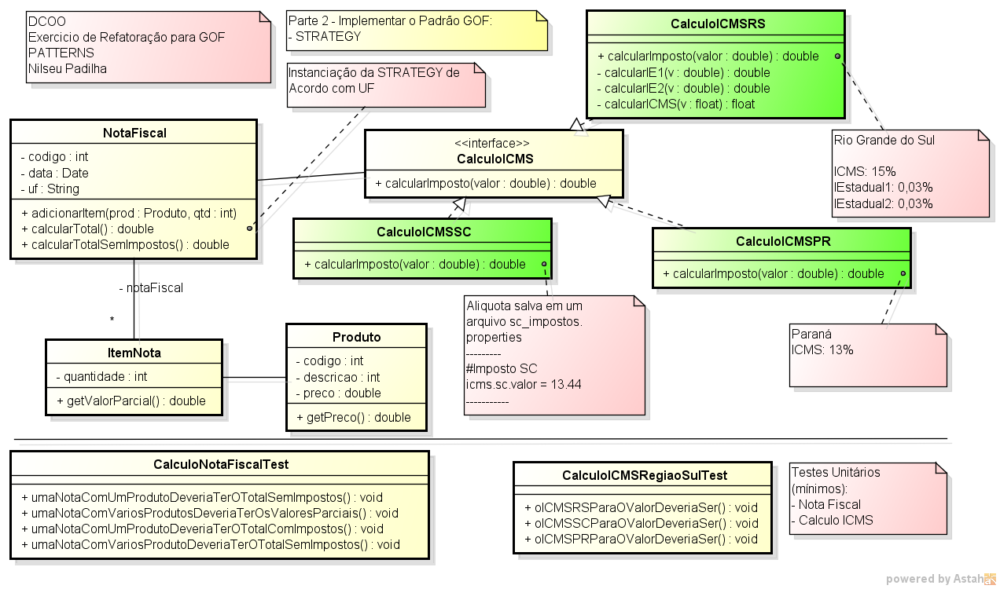
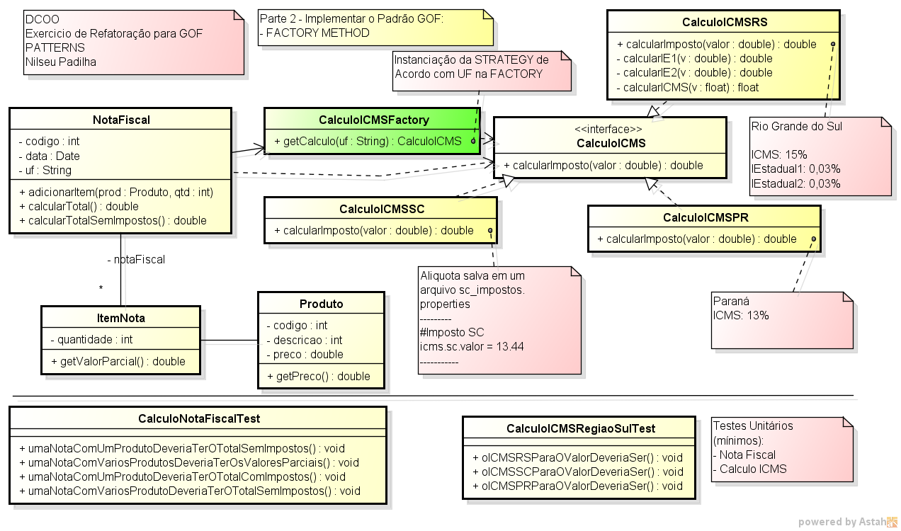

dcoo_projeto_n1_joaozinho_mariazinha
Você deve implementar um mecanismo de cálculo de impostos para a região sul incluindo Paraná, Santa Catarina e Rio Grande do Sul e empregando os padrões de projeto GRASP e GoF.
Você deve implementar o seguinte modelo de cálculo de impostos em JAVA, usando os padrões Especialista da Informação e Criador. Não devemos esquecer os TESTES em JUNIT!
Segue o modelo 1 (tarefas 1 a 3):

Em um segundo momento deve implementar o padrão Invenção Pura, extraindo o Cálculo do ICMS para a nova classe CalculoICMS como mostrado na seguinte figura:
Segue o modelo 2 (tarefa 4):

calcularTotal() e calcularTotalSemImpostos() (as estratégias de cálculo estão nas notas do Diagrama; para ler o imposto de SC use a classe edu.faqi.pocs.properties.LeProperties como exemplo) - modelo 1 calcularTotal() e calcularTotalSemImpostos() e as classes de teste – modelo 1CalculoICMS extraindo a lógica de cálculo de imposto do método NotaFiscal.calcularTotal() para o método CalculoICMS Com o objetivo de melhorar o design da classe CalculoICMS refatorar a classe usando o padrão Gof Strategy de acordo com o diagrama abaixo:

CalculoICMSRS e extrair logica correspondente da classe NotaFiscal.calcularTotal() NotaFiscal.calcularTotal() para chamar a instanciar Strategy CalculoICMSRSCalculoICMSSC e extrair logica correspondente da classe NotaFiscal.calcularTotal() NotaFiscal.calcularTotal() para chamar a instanciar Strategy CalculoICMSSCCalculoICMSPR e extrair logica correspondente da classe NotaFiscal.calcularTotal() NotaFiscal.calcularTotal() para chamar a instanciar Strategy CalculoICMSPRA instanciação direta da classe strategy em NotaFiscal limita a flexibilidade da nota fiscal, para tanto será feita uma refatoração implementando o padrão Factory Method para cada Strategy de cálculo de Nota Fiscal.

CalculoICMSFactory e refatoar a classe NotaFiscal para obter a Strategy correta.1 Joshua Kerievsky(2004) - Refactoring to Patterns ( amazon )